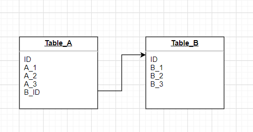

最近项目上碰到一个MySQL死锁的情况，折腾了一下，为了以后温故知新，在这里覆盘一下。
问题
我们项目里一个定时计划在每次到运行时间的时候，会出现“Deadlock found when trying to get lock” 这样的死锁字样的日志。
排查过程
这个问题在多台机器同一个时间点触发任务时，几乎是必现的。经过排查最终定位到了某个方法，这个方法对数据库的操作很简单：
- 对A表插入一条数据（Insert）。
- 更新B表某个字段（Update）。
两个操作是在同一个事务中执行，多台机器同时运行这个方法时，就会出现死锁。
排查到这里的时候，心里还有点纳闷，一般死锁问题是两个包含相反操作顺序的事务进行操作才会出现（比如一个是先A再B，一个是先B再A），为什么这里两台机器执行顺序一样也会出现死锁（先A再B）？百思不得其解的时候，同事提了一嘴会不会是MySQL的外键的问题，查了下数据库表结构，A，B两张表还真有外键关系。两张表的数据结构大致如下：

A表有个字段外键引用了B表的主键ID，刚好第一步Insert操作的B_ID跟第二步Update操作的数据是同一个B_ID，所以有意思的地方来了，这个外键的引入会影响两个表更新时的加锁操作。所以对于上面的两个操作，MySQL的InnoDB引擎是这么加锁的：
对于表A的Insert操作（B_ID=1），会有一个gap lock，也就是范围锁，这可以防止统一事务两次当前读。同时对于B表ID等于1的记录，也会加锁。
对于表B(B_ID=1)记录的Update操作，如果同一个事务Update和之前的Insert处于同一个事务，没什么问题。如果多个事务同时处理，死锁问题就来了：每个事务都会等待其他事务的第一步Insert操作释放B表ID=1的数据的锁，然而因为大家都在等，都没法提交，自然就出现死锁问题了。
解决
由于我们对于数据一致性有要求，所以这里是不能把外键去掉的，也不能把事务去掉，所以解决方案就是引入一个分布式锁让这个定时任务每次只有一台机器执行，自然也就没有死锁问题了。
究其原因，还是对于MySQL的外键锁没有深刻的认识。